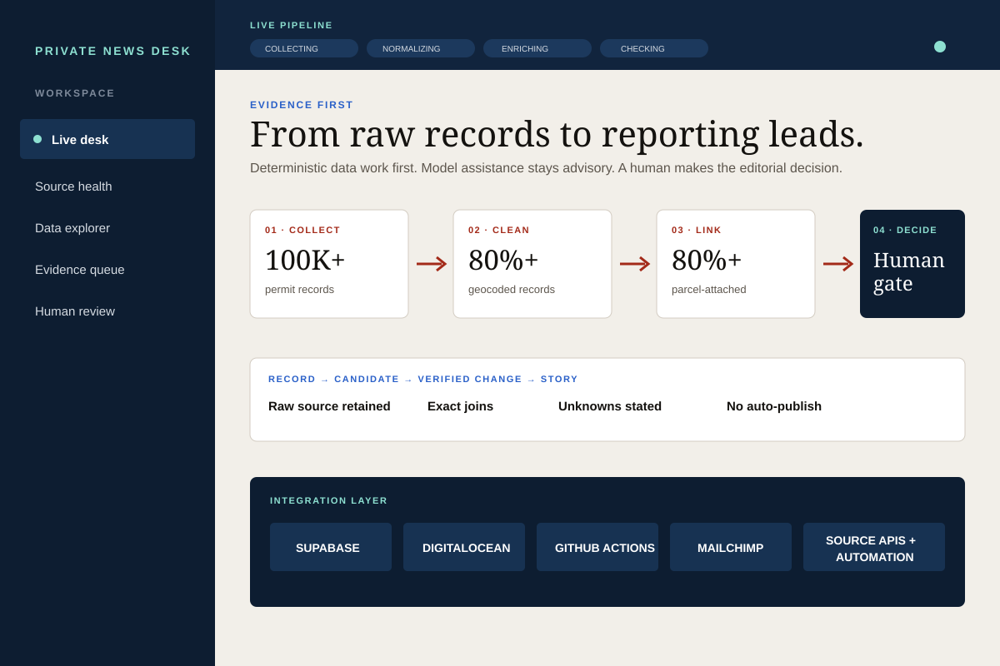
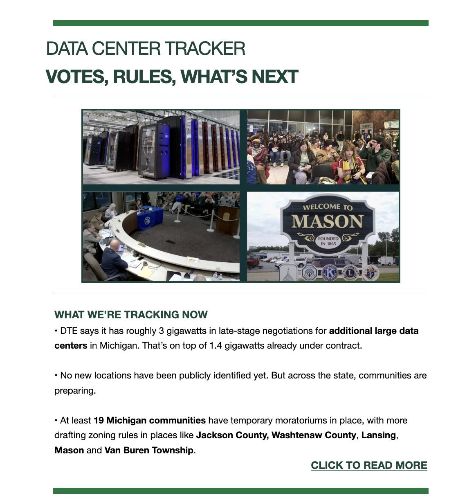

Independent prototypes · not newsroom deployments
Tools for the journalists of the future.
On nights and weekends, I have been building working data-journalism prototypes: public-record pipelines, statewide maps, evidence-first research desks and human-gated AI systems. The purpose is not to replace journalists. It is to remove repetitive work, surface stronger leads and give reporters more time for verification, context and original reporting.
The projects below are independent R&D. They are not deployed in my newsroom, and no private employer or unpublished product is identified here.

100K+
Public records normalized
80%+
Geocoded and parcel-linked
83
Sourced Michigan map points
6
Map layers, each source-linked
Prototype 01 · Michigan Data Center Tracker
One map for projects, power, water, policy and public decisions.
I built a source-first Michigan tracker that connects data-center proposals to the systems around them: local moratoria and meetings, power generation and transmission, water and aquifers, policy and geography. Every plotted record carries a source, verification date and confidence label.
The prototype holds 83 points across six layers: 19 projects, 33 moratoria, 24 generation sites, four grid proposals, two meetings and one policy point. It also includes 83 county boundaries, 1,240 township polygons, 1,388 aquifer features and 1,737 transmission-line features. Large layers load only when requested.
Independent working prototype · not deployed in a newsroom

Map design rule
A point without a source is decoration, not journalism.
Blank load stays “undisclosed,” reported and confirmed records remain visibly different, and every layer retains its underlying public source.
Prototype 02 · Private News Desk
Clean the data. Preserve the evidence. Let a human decide.
I built a separate public-record system that watches changes over time, connects related events to a property timeline, cross-checks the evidence and drafts a concise internal brief for review. Behind that simple experience are collection, normalization, deduplication, geocoding and enrichment systems. Raw source material stays intact, contradictions stay visible, and nothing becomes a publishable story without named human review.
01 · Collect
Scheduled source collectors retain raw records, receipts and separate freshness clocks.
02 · Clean + link
Normalize fields, deduplicate stable IDs, geocode defensible records and join exact parcel/entity evidence.
03 · Nominate
Deterministic detectors create reason-coded candidates and sealed evidence packets, not conclusions.
04 · Decide
A journalist checks significance, claims, unknowns and context. No narrative auto-publishes.
The integration layer
A product only counts when the parts work together.
Supabase
Postgres, row-level security, scheduled functions, migrations, exact-match views and a bounded public mirror.
DigitalOcean
Hosted collectors, systemd schedules, APIs, source-health checks, durable data and recovery procedures.
GitHub
Private repositories, versioned architecture, automated tests, browser checks, deploy gates and monitoring.
Mailchimp
Consent-aware subscriber workflows and human-approved newsletter artifacts, separated from the research system.
Browser + Mac automation
Resilient source collection with retries, checkpoint state, login-aware recovery and explicit stop conditions.
Public-source APIs
Permits, property, meetings, environmental, infrastructure and official geographic layers with provenance intact.
AI-assisted, evidence-first
Use the models for what they are good at. Keep authority where it belongs.
I used multiple AI systems as scoped collaborators while building and testing these prototypes. Their work is auditable and bounded; none is treated as a source of truth or an autonomous publisher.
ChatGPT / Codex
Implementation, debugging, tests, system audits and durable documentation.
Claude
Product and UX critique, design prototypes, workflow review and adversarial questions.
Grok
Open-web research leads kept separate from official public-record evidence until a journalist verifies them.
Gemini
Independent architecture critique and comparison against the same safety and usability questions.
Feedback without a black box
The useful version of “self-learning” is measured feedback, not a model rewriting its own rules.
I designed a bounded architecture in which reviewed outcomes become evaluation cases, monitoring can propose a versioned change, an independent check tests it and a human decides whether it ships. That feedback system is a design direction, not an autonomous production loop.
The system should make the journalist more powerful, not make the journalist disappear.